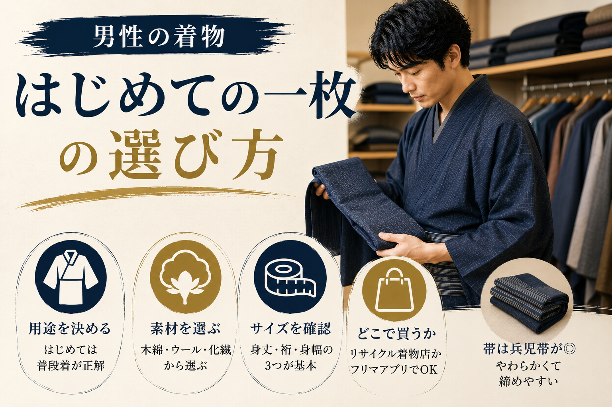

男性の着物、はじめての一枚の選び方

「着物を着てみたい」と思いながら、何から手をつければいいかわからない男性は多い。種類が多く、価格帯も幅広く、どこで買えばいいかすら見当がつかないのが正直なところだと思う。
この記事では、男性がはじめて着物を買うときに知っておきたいことを、できるだけ実用的にまとめた。
まず「何のために着るか」を決める
着物には用途がある。普段着、お出かけ着、フォーマルの3つに大きく分けられる。はじめての一枚は「普段着」として使えるものを選ぶのが正解だ。理由は単純で、気軽に着られるから練習になるし、汚しても後悔しにくい。
フォーマル用の高価な着物を最初に買っても、着る機会がなければタンスの肥やしになる。まず着ることに慣れることを優先した方がいい。
素材の選び方
男性の普段着着物として現実的な素材は以下の3つだ。
| 素材 | 特徴 | 価格帯（中古） |
|---|---|---|
| 木綿（もめん） | 丈夫で洗える。初心者に最適 | 3,000〜15,000円 |
| ウール | 保温性が高い。秋冬向き | 2,000〜10,000円 |
| 化繊（ポリエステル） | 洗濯機で洗える。シワになりにくい | 5,000〜20,000円 |
シルク（絹）は着心地がよいが、洗えないものが多く扱いが難しい。最初は木綿かウールから入るのが無難だ。
サイズの見方
着物のサイズは「身丈（みたけ）」「裄（ゆき）」「身幅（みはば）」の3つが基準になる。身丈は自分の身長に合ったもの、裄は肩幅＋腕の長さで決まる。
男性の場合、身丈は身長と同じかやや短めで着ることが多い。裄は測り方がやや特殊なので、リサイクルショップや着物専門店で実際に当ててもらうのが一番確実だ。
どこで買うか
はじめての一枚は「リサイクル着物店」か「ネットのフリマアプリ」を勧める。新品は高く、はじめてで着こなせるか不安な段階では手が出しにくい。
リサイクル着物店は、店員にサイズを相談できるのが利点だ。東京なら浅草や日本橋周辺に専門店が集まっている。フリマアプリはサイズ確認が自己責任になるが、安く手に入る。
まずは3,000円〜1万円の予算で探してみるといい。練習用の一枚としては十分だ。
帯はどうするか
男性の普段着には「角帯（かくおび）」か「兵児帯（へこおび）」を使う。角帯は硬くてしっかりした印象、兵児帯はやわらかくて締めやすい。
はじめては兵児帯の方が扱いやすい。締め方の選択肢は少ないが、その分シンプルで覚えやすい。
← 記事一覧に戻る